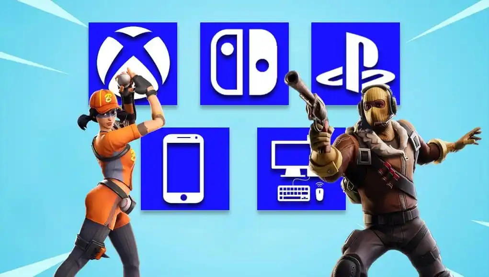

Fortnite, uno de los juegos más populares de la última década, está disponible en una amplia variedad de plataformas, lo que permite a los jugadores disfrutar de la experiencia de juego en casi cualquier dispositivo. Desde consolas de videojuegos hasta computadoras de escritorio, dispositivos móviles y más, Fortnite ha sido diseñado para adaptarse a diferentes plataformas de juego, lo que ha contribuido significativamente a su impresionante base de jugadores y su impacto cultural.
Una de las características más destacadas de Fortnite es su capacidad para admitir el juego multiplataforma, lo que significa que los jugadores pueden enfrentarse entre sí independientemente de la plataforma en la que estén jugando. Esta función permite a los jugadores de PC jugar contra jugadores de consola, usuarios de dispositivos móviles y viceversa, creando una comunidad unificada de jugadores de todo el mundo.
Fortnite está disponible en las siguientes plataformas principales:
1. PC (Windows y macOS): Los jugadores pueden descargar Fortnite de forma gratuita desde la plataforma de lanzamiento de Epic Games en sus computadoras con sistema operativo Windows o macOS. La versión de PC ofrece gráficos de alta calidad y una experiencia de juego fluida, aprovechando al máximo el rendimiento de hardware de la computadora.
2. Consolas de videojuegos (PlayStation, Xbox, Nintendo Switch): Fortnite está disponible en las principales consolas de videojuegos, incluidas PlayStation 4, PlayStation 5, Xbox One, Xbox Series X/S y Nintendo Switch. Los jugadores pueden descargar el juego de forma gratuita desde las respectivas tiendas de cada plataforma y disfrutar de la experiencia de juego en sus consolas favoritas.
3. Dispositivos móviles (Android e iOS): Fortnite también está disponible en dispositivos móviles, lo que permite a los jugadores llevar la acción a cualquier lugar. Sin embargo, es importante destacar que en agosto de 2020, Fortnite fue eliminado de la App Store de Apple y Google Play Store debido a disputas sobre las políticas de pago de estas plataformas. A pesar de esto, los jugadores que ya tenían el juego instalado en sus dispositivos pueden seguir jugando y recibiendo actualizaciones, y Fortnite sigue estando disponible para descargar en dispositivos Android a través de la plataforma Epic Games.
La posibilidad de jugar Fortnite en múltiples plataformas ha contribuido en gran medida a su enorme base de jugadores y su popularidad general. Esto ha permitido que amigos y familiares jueguen juntos independientemente del dispositivo que posean, lo que fomenta la comunidad y la diversión compartida.
En cuanto a la distribución de jugadores por plataforma, las consolas de videojuegos y PC suelen tener una base de jugadores considerablemente grande, con la PlayStation y la Xbox siendo las plataformas más populares para jugar Fortnite. Sin embargo, debido a la portabilidad y accesibilidad, los dispositivos móviles también cuentan con una base de jugadores significativa, especialmente entre aquellos que disfrutan de jugar en movimiento.
En términos de números específicos, Epic Games, la empresa detrás de Fortnite, no proporciona datos exactos sobre la cantidad de jugadores por plataforma. Sin embargo, se estima que Fortnite tiene decenas de millones de jugadores activos en todo el mundo en todas las plataformas combinadas, lo que lo convierte en uno de los juegos más jugados y rentables de la industria del entretenimiento. La capacidad de jugar en múltiples plataformas y la continua actualización de contenido y eventos en el juego han contribuido en gran medida a mantener el interés de los jugadores y a garantizar el éxito continuo de Fortnite en la comunidad de juegos.
¡Siguenos en nuestras redes sociales! Instagram Twitter Facebook Mapa Web Contactanos